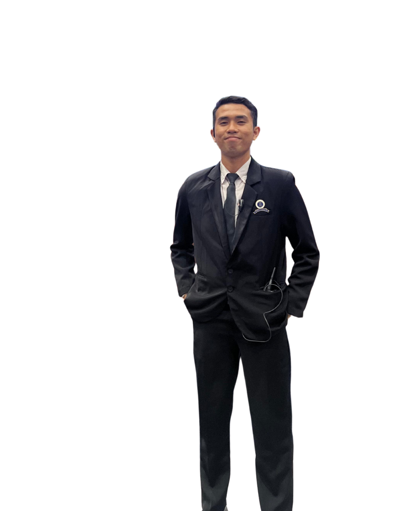

Oceanography · WebGIS · Software
Mahasiswa Oseanografi Institut Teknologi Bandung dengan fokus pada pengembangan WebGIS, backend, dan analisis data metocean.

Mahasiswa Oseanografi tingkat akhir di Institut Teknologi Bandung dengan ketertarikan pada pengembangan WebGIS, backend, dan pengolahan data metocean.
Pengalaman saya meliputi pengembangan platform spasial untuk lembaga riset dan pemerintah, pemrosesan data geofisika bawah laut, hingga instrumentasi IoT untuk pemantauan pesisir. Saat ini saya mengerjakan platform vulkanologi DiVolca.Net di BRIN.
Terbuka untuk diskusi terkait WebGIS, oseanografi, dan proyek berbasis data spasial.